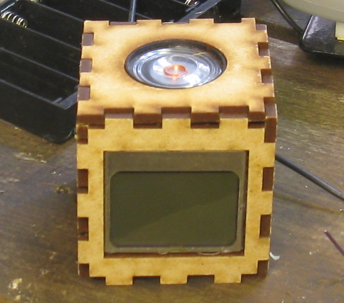
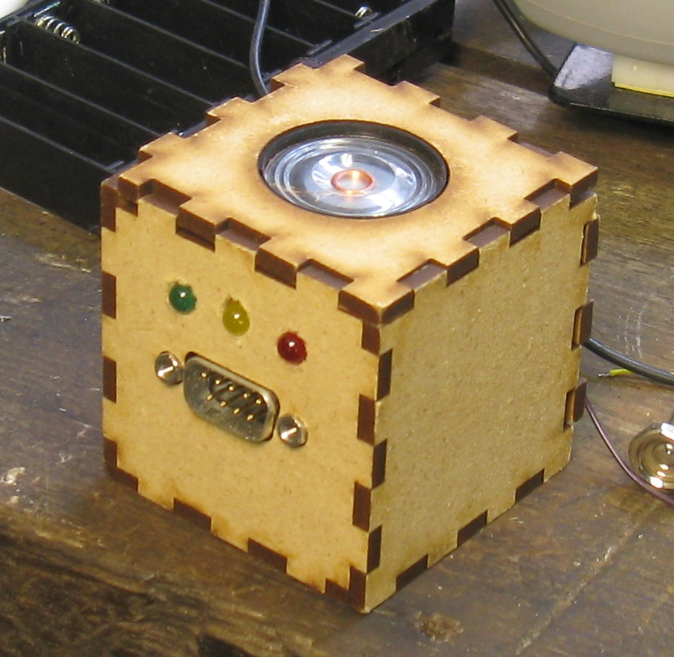

An 8 bit computing platform.
I thought it would be fun to make a portable device with a screen and speaker which could be easily programmed to play games or run apps. It had a Nokia 3310 LCD display, some LEDs, a DB9 port for expansion, and ran code via an ATmega328P microcontroller.

Made just after high school